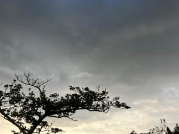
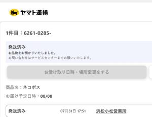

うるがいの話 ある日
最新: 落札した物が届かない【うるがいの話 ある日】とは 一日だけのプログです
『うるがいの話』の最新一日だけのプログで、通信料が少なく経済的だ。カニの画像をクリックすると全ての日付が載る『うるがいの話』サイトを表示します
|
|
【うるがいの話】 うるがい(ｳﾙｶﾞｲ urugai)とは、『もずくがに』の名前でとても大きくなります。 |
|---|---|
|
|
【カミマヤーの話】 猫のことを方言でマヤーといいます。カミマヤー（kamimayaa）とは、神の猫のことです。 |
|
【たながぁの音楽】 たながぁ（ﾀﾅｶﾞｰ tanagaa）とは手長えびのことで、何種類かあり大きいのは車 エビぐらいになります。 |

|
【ぶながぁの話】 ぶながぁ(ﾌﾞﾅｶﾞｰ bunagaa)とは、赤い髪の毛、赤い身体、そして身長は１ｍ２０ｃｍ ぐらい、川の蟹を食べているの目撃された。場所は沖縄県国頭郡大宜味村のと ある村僕の隣近所に住んでいる爺さんから、聞いた話です。 |
|
|
【ギーマの話】 ギーマ(giima)とは、山原の里山に咲くスズランに似た、 花を付けます。実は食べられます、 気が付くと口の周りが紫になっています。 |
2023年08月23日 (水）落札した物が届かない
16:14
 
ヤフーオークションで落札した物が台風６号の影響で、８月８日（火）に届く
予定が未だに届かない。
台風の影響によるお荷物のお届けについて（2023年8月23日 13:00時点）
お客さま各位
いつもヤマト運輸をご利用いただきまして、ありがとうございます。
台風６号および台風７号の影響により、一部地域あてのお荷物のお届けに遅れ
が生じております。以下の地域へのお荷物については「遅延了承」の上お預か
りさせていただきます。
■お荷物のお届けに遅れが生じている地域
・全国から鳥取県の一部あて
・全国から鹿児島県の島しょ部あて
・全国から沖縄県全域あて
・沖縄県全域から全国あて
※鹿児島県の島しょ部や沖縄県では、お荷物が増加しているなか、海上輸送に
おけるフェリーや航空輸送における航空機の搭載制限などがあり、お荷物のお
届けに遅れが生じております。
お客さまには大変ご迷惑をお掛けいたしますが、何とぞご了承いただきますよ
うお願い申し上げます。
ホイ、わたし待つわ・・・・・
１６時０８分 ビットコインの総資産 ￥１１、０１３（↓４４）